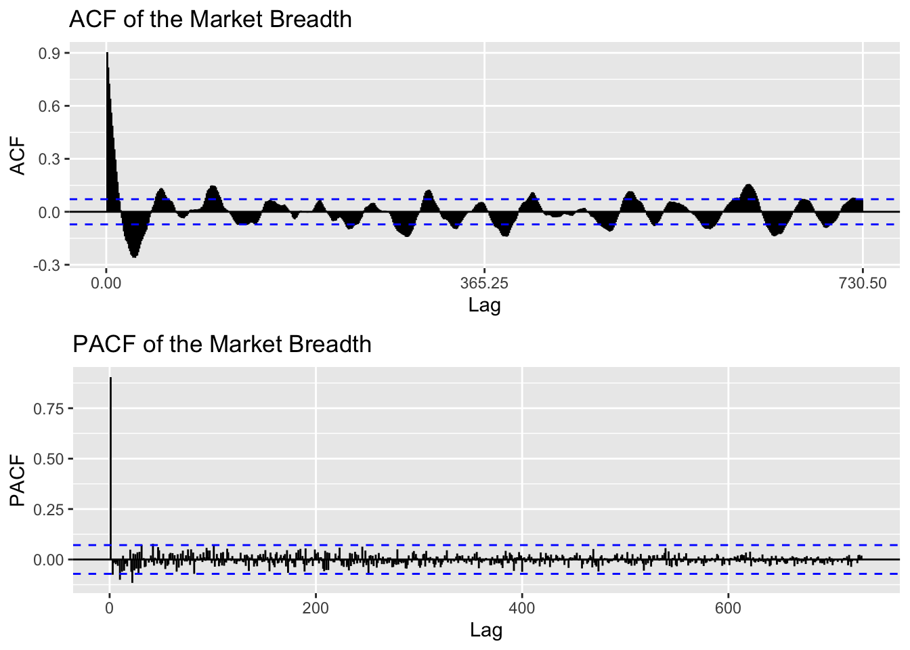
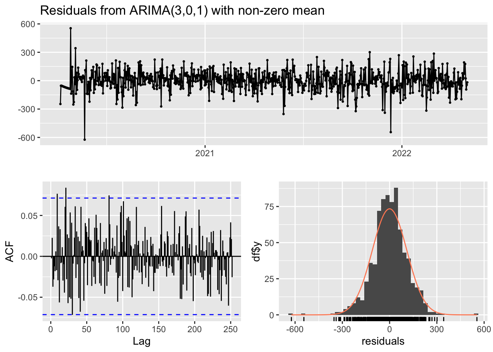
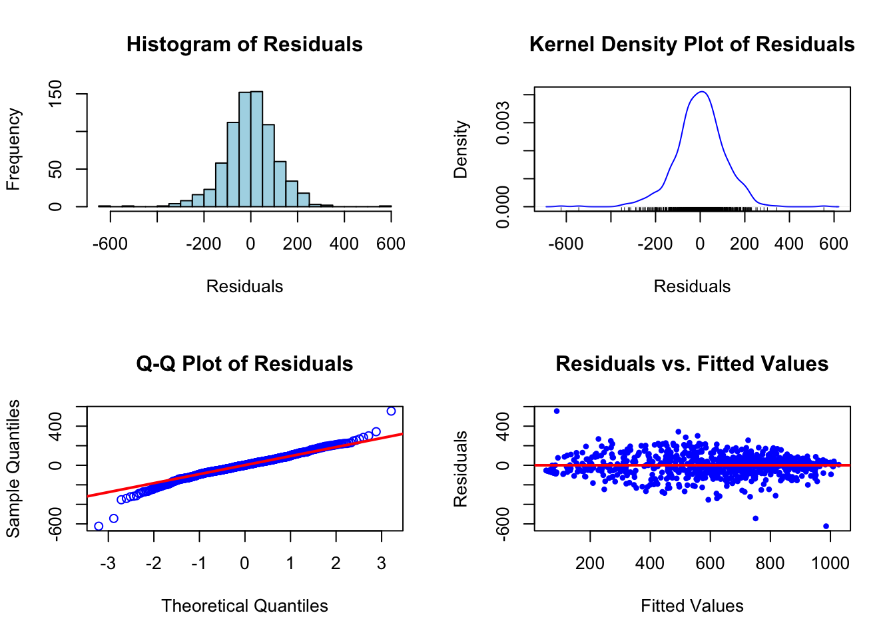
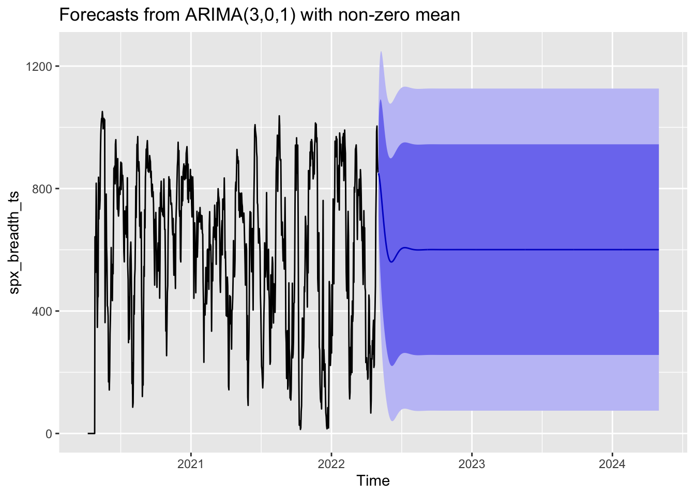
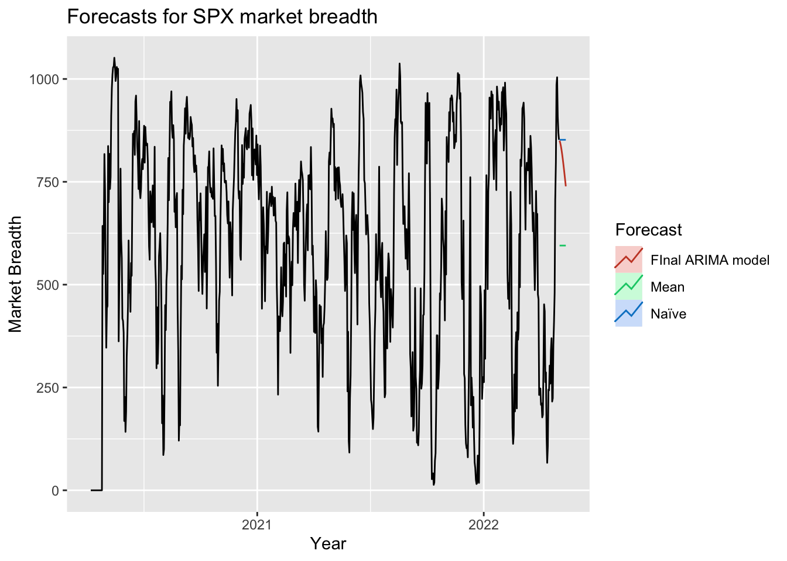
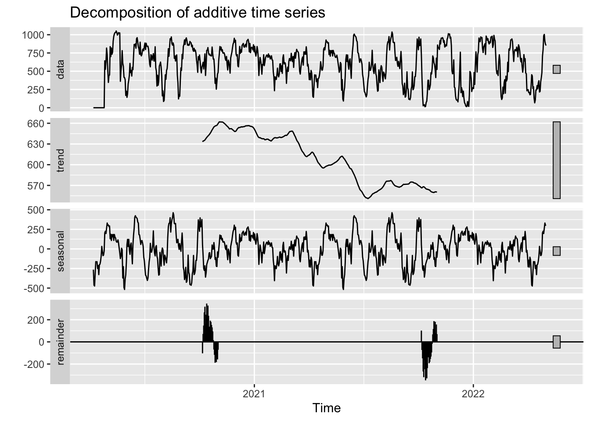

ARMA/ARIMA/SARIMA MODEL
During the Exploratory Data Analysis session, through ACF and Augmented Dickey-Fuller Test we are able to find that the market breadth data is stationary, thus no need for differencing and log transformed at first time.
ARIMA Models
Code
spx_breadth_data <- read_csv("spx_market_breadth.csv") %>%
mutate(Date = ymd(Date)) %>%
rename(Breadth = `0`)
spx_breadth_ts <- ts(spx_breadth_data$Breadth, start =decimal_date(as.Date("2020-04-07", format="%Y-%m-%d")), frequency = 365.25)Check for stationarity
Code
require(gridExtra)
plot5 = ggAcf(spx_breadth_ts)+ggtitle("ACF of the Market Breadth")
plot6 = ggPacf(spx_breadth_ts)+ggtitle("PACF of the Market Breadth")
grid.arrange(plot5, plot6,nrow=2)
Code
# Perform ADF test
adf_test <- adf.test(spx_breadth_ts)
# Print the results
print(adf_test)
Augmented Dickey-Fuller Test
data: spx_breadth_ts
Dickey-Fuller = -6.8663, Lag order = 9, p-value = 0.01
alternative hypothesis: stationaryAgain, both the ACF plot and the Augmented Dickey-Fuller test shows that the market breadth data is stationary, thus no further differencing needed. Since we didn’t differenced the data, we will be using ARMA model, and from the plot we could clearly see that p=1 and q=0, observed from the AR and MA model
Model FItting (ARMA)
Code
# Initialize the ARIMA results list
ARMA_res <- list()
# Set a counter
cc <- 1
# Loop over AR (p) values
for (p in 1:3) {
# Loop over MA (q) values
for (q in 0:1) {
# Fit the ARIMA model
ARMA_res[[cc]] <- arima(x = spx_breadth_ts, order = c(p, 0, q))
# Increment the counter
cc <- cc + 1
}
}
# Get AIC and BIC values for model evaluation
ARMA_AIC <- sapply(ARMA_res, function(x) x$aic)
ARMA_BIC <- sapply(ARMA_res, function(x) x$bic)
# Find the index of the minimum AIC value
best_model <- ARMA_res[[which(ARMA_AIC == min(ARMA_AIC))]]
# Print the best model
print(best_model)
Call:
arima(x = spx_breadth_ts, order = c(p, 0, q))
Coefficients:
ar1 ar2 ar3 ma1 intercept
1.8353 -0.7963 -0.0497 -0.9447 600.5391
s.e. 0.0438 0.0762 0.0374 0.0250 20.9535
sigma^2 estimated as 12081: log likelihood = -4626.66, aic = 9265.32Breadth(t) = 600.5391 + 1.8353 * Breadth(t-1) - 0.7963 * Breadth(t-2) - 0.0497 * Breadth(t-3) - 0.9447 * ε(t-1) + ε(t)
Model Diagonsis
Code
# Fit the ARIMA(3, 0, 1) model
best_model <- Arima(spx_breadth_ts, order = c(3, 0, 1))
# Residual diagnostics
checkresiduals(best_model)
Ljung-Box test
data: Residuals from ARIMA(3,0,1) with non-zero mean
Q* = 129.38, df = 147, p-value = 0.8491
Model df: 4. Total lags used: 151Code
# Additional residual plots
par(mfrow = c(2, 2))
# Histogram of residuals
hist(best_model$residuals, breaks = 20, main = "Histogram of Residuals", xlab = "Residuals", col = "lightblue", border = "black")
# Kernel density plot of residuals
plot(density(best_model$residuals), main = "Kernel Density Plot of Residuals", xlab = "Residuals", ylab = "Density", col = "blue")
rug(best_model$residuals, col = "black")
# Q-Q plot of residuals
qqnorm(best_model$residuals, main = "Q-Q Plot of Residuals", col = "blue")
qqline(best_model$residuals, col = "red", lwd = 2)
# Scatter plot of residuals vs. fitted values
plot(fitted(best_model), best_model$residuals, main = "Residuals vs. Fitted Values", xlab = "Fitted Values", ylab = "Residuals", col = "blue", pch = 20)
abline(h = 0, col = "red", lwd = 2)
Code
par(mfrow = c(1, 1))By checking the residual of the model ARIMA(3,0,1) we can see that the model did a good job of capturing the residual and the movement of the dataset as the distribution of the residual is normally distributed and most of the residuals follows the q-q plot.
Compare with Auto.ARima()
Code
auto.arima(spx_breadth_ts)Series: spx_breadth_ts
ARIMA(1,0,0) with non-zero mean
Coefficients:
ar1 mean
0.9101 591.6137
s.e. 0.0152 44.2257
sigma^2 = 12305: log likelihood = -4632.51
AIC=9271.02 AICc=9271.05 BIC=9284.9The result of the auto arima is different from the model I choose, which I believe there could be several cause of this:
Different criteria: While I used the AIC value to select the best ARIMA model in your manual search, auto.arima also considers AICc (corrected AIC) and BIC (Bayesian Information Criterion) values in its model selection process. These criteria may lead to different model selections.
Stepwise procedure: The auto.arima function uses a stepwise search algorithm to find the best model, which starts with a simple model and adds or removes terms based on the AIC value. This stepwise approach is computationally efficient, but it may not explore all possible combinations of p, d, and q, and thus might not find the same model as my manual search.
ARIMA model forecast
Code
forecast(best_model,10) Point Forecast Lo 80 Hi 80 Lo 95 Hi 95
2022.3348 850.0667 708.7395 991.3939 633.9254 1066.208
2022.3376 844.7766 655.5244 1034.0288 555.3404 1134.213
2022.3403 837.5736 614.3001 1060.8470 496.1062 1179.041
2022.3431 828.6691 579.6969 1077.6414 447.8989 1209.439
2022.3458 818.3257 549.4260 1087.2254 407.0791 1229.572
2022.3485 806.7914 522.3208 1091.2619 371.7312 1241.852
2022.3513 794.3017 497.6918 1090.9116 340.6760 1247.927
2022.3540 781.0788 475.0914 1087.0663 313.1114 1249.046
2022.3567 767.3301 454.2068 1080.4533 288.4494 1246.211
2022.3595 753.2477 434.8075 1071.6879 266.2354 1240.260Code
autoplot(forecast(best_model))
We can see the model was able to provide a good forecast for months but not good enough for later changes.
Compare with benchmark
Code
accuracy(best_model) ME RMSE MAE MPE MAPE MASE ACF1
Training set -0.2061896 109.9129 82.16254 -Inf Inf 0.2886379 -0.002412457Code
bench_fit <- snaive(spx_breadth_ts, h=24)
accuracy(bench_fit) ME RMSE MAE MPE MAPE MASE ACF1
Training set -66.77762 359.1479 290.0464 -145.9626 179.2656 1.018936 0.8979772By comparing the RMSE, my manual model clearly outperform the benchmark naive model.
Code
autoplot(spx_breadth_ts) +
autolayer(meanf(spx_breadth_ts, h=11),
series="Mean", PI=FALSE) +
autolayer(naive(spx_breadth_ts, h=11),
series="Naïve", PI=FALSE) +
autolayer(forecast(best_model, h=11),
series="FInal ARIMA model", PI=FALSE) +
ggtitle("Forecasts for SPX market breadth") +
xlab("Year") + ylab("Market Breadth") +
guides(colour=guide_legend(title="Forecast"))
By visualizting the forecast, it is also clear that the model has outperform the benchmark models.
SARIMA
Code
autoplot(decompose(spx_breadth_ts))
By decomposing the market breadth time series, I can’t observed significant seasonal effect with in the data, which is normal for the stock market breadth that measure the direction of market movement rather than the overall movements.